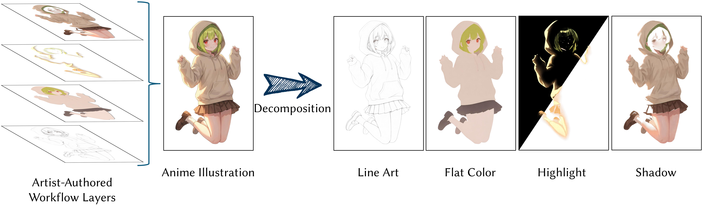

Workflow-Aware Structured Layer Decomposition for Illustration Production
1 Japan Advanced Institute of Science and Technology (JAIST)
2 Live2D Inc. 3 Waseda University

Abstract
Recent generative image editing methods adopt layered representations to mitigate the entangled nature of raster images and improve controllability, typically relying on object-based segmentation. However, such strategies may fail to capture the structural and stylized properties of human-created images, such as anime illustrations. To address this issue, we propose a workflow-aware structured layer decomposition framework tailored to anime illustration production. Inspired by the creation pipeline of anime production, our method decomposes an illustration into semantically meaningful production layers, including line art, flat color, shadow, and highlight. To decouple these layers, we introduce lightweight layer semantic embeddings that provide specific task guidance for each layer. Furthermore, a set of layer-wise losses is incorporated to supervise the training of individual layers. To overcome the lack of ground-truth layered data, we construct a high-quality illustration dataset that simulates the standard anime production workflow. Experiments demonstrate that our method achieves accurate and visually coherent layer decompositions. We believe that the resulting layered representation further enables downstream tasks such as recoloring and texture editing, supporting both content creation and illustration editing.
Framework

Dataset

All data are produced by two experienced artists: one artist is responsible for layer creation, while the other performs supervision and quality refinement.
Results

Applications

BibTeX
If you find our work useful for your research, please cite:
@article{zhang2026workflow,
title={Workflow-Aware Structured Layer Decomposition for Illustration Production},
author={Zhang, Tianyu and Li, Dongchi and Sawada, Keiichi and Xie, Haoran},
journal={arXiv preprint arXiv:2603.14925},
year={2026}
}